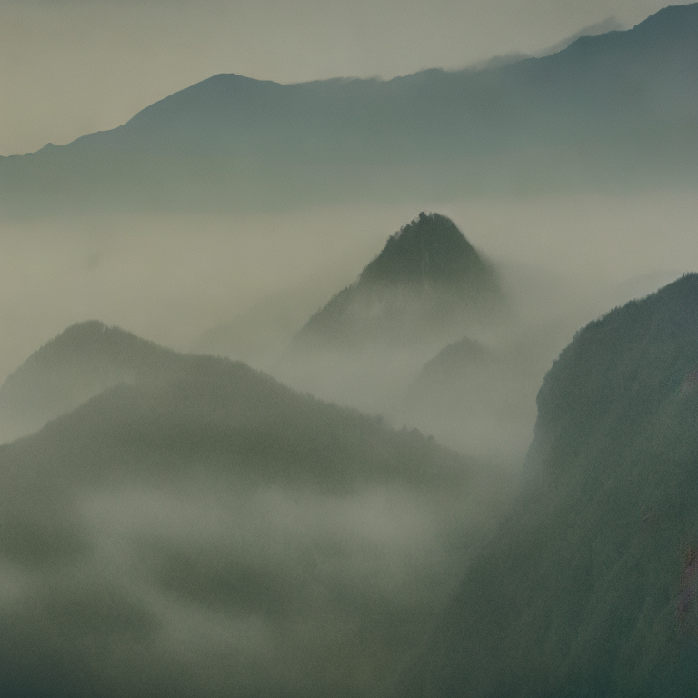
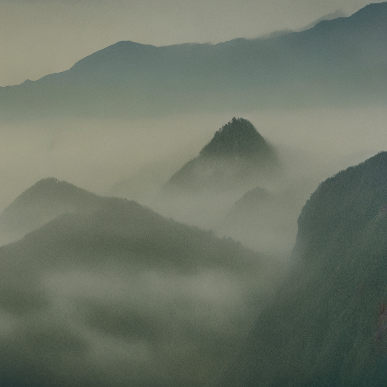
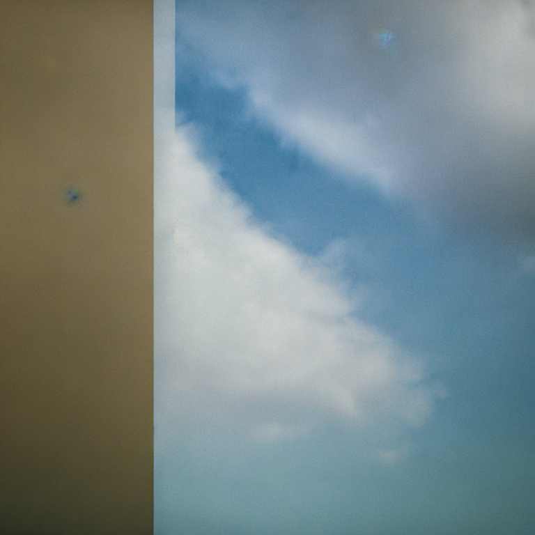
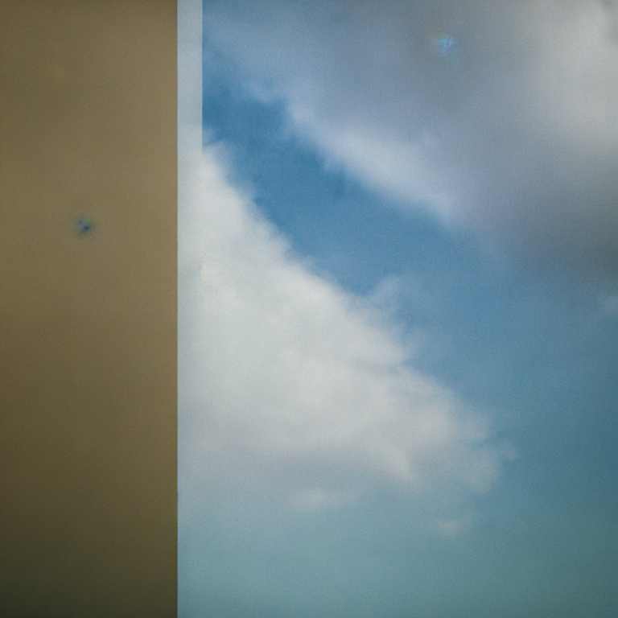
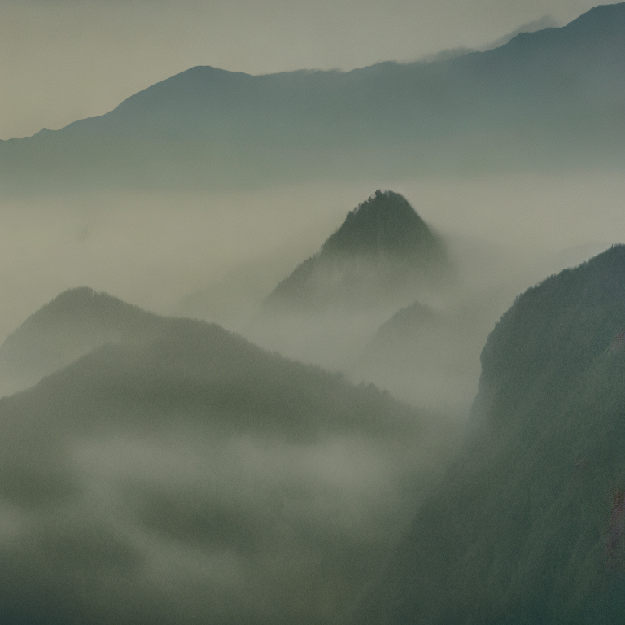
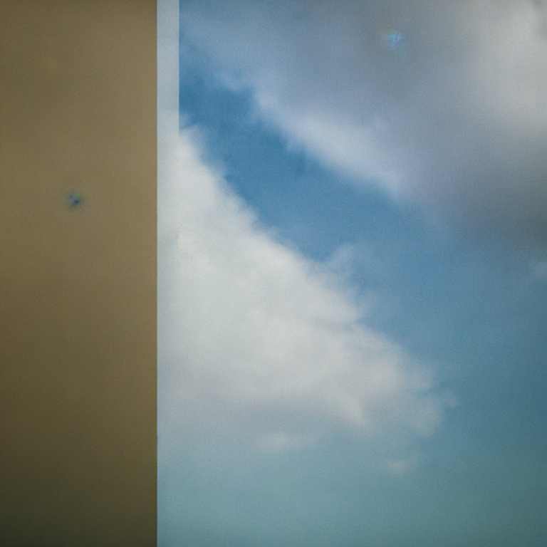

 

Below are select output images from model-6 which was trained off a set of still images from films by Jean-Luc Godard. The code for the model and more information can be found in it's documentation and the development log.
model documentation

